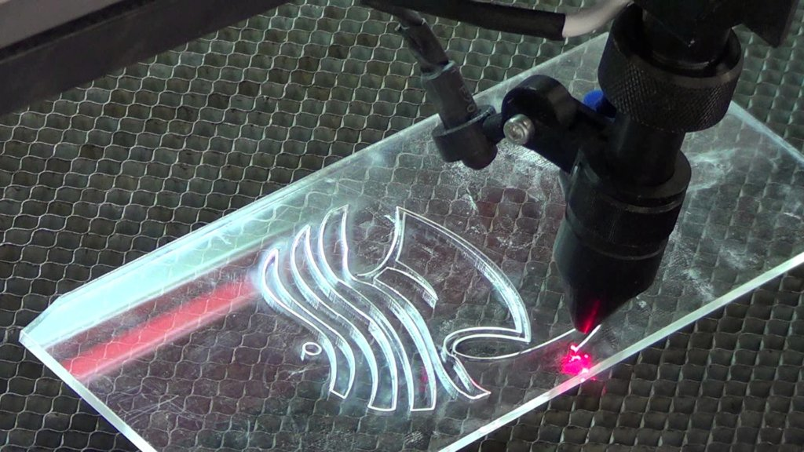
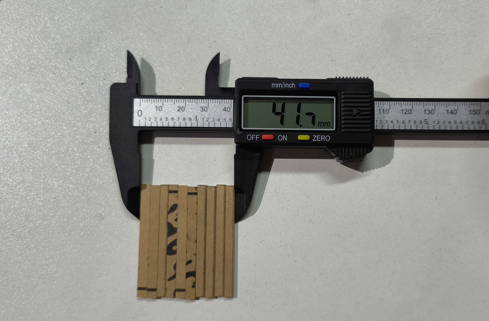
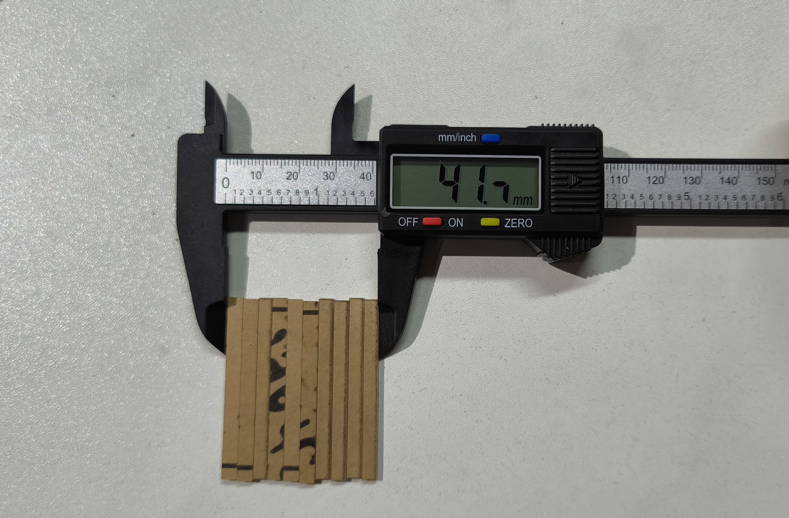

Laser Cutting:
A Precise and Versatile Manufacturing Technique
Introduction
Laser cutting is a manufacturing technique that utilizes a focused beam of light, typically from a carbon dioxide (CO2) or fiber laser, to melt, vaporize, or ablate (remove) material. This high-precision process allows for intricate and detailed cuts with minimal heat-affected zone and minimal waste.
Use Cases:
Laser cutting finds applications in various industries, including:
- Aerospace: Fabrication of lightweight and complex aircraft components
- Automotive: Cutting intricate interior and exterior parts
- Medical: Manufacturing medical devices and prosthetics
- Electronics: Creating precise circuit board patterns
- Jewelry: Crafting delicate jewelry pieces
- Art and design: Producing intricate artwork and sculptures
- Packaging: Creating custom boxes and packaging materials
- Construction: Cutting metal and wood for building components
Materials for Laser Cutting
The versatility of laser cutting lies in its compatibility with a wide range of materials. Some of the most commonly used materials include:
Wood: Plywood, MDF, balsa, hardwoods, and softwoods are popular choices for laser cutting, allowing for creation of furniture, toys, decorative items, and more. Source
Acrylic: This versatile plastic offers excellent optical clarity and comes in various colors and thicknesses, making it ideal for signage, displays, and craft projects.  Source
Metals: Thin sheets of steel, stainless steel, aluminum, brass, and copper can be laser-cut for various applications, such as jewelry, electronics, and architectural components. Source
Paper and cardboard: Laser cutting paper and cardboard creates intricate invitations, greeting cards, packaging designs, and more.
 Source
Source
Beyond these common materials, laser cutting can also be used with:
Rubber: For gaskets, seals, and other industrial applications.
Factors to Consider when Choosing a Material:
Compatibility with your laser cutter: Different laser types (CO2, fiber, etc.) have varying capabilities.
Desired outcome: Melting, vaporizing, or ablation will determine the final cut quality and surface finish.
Thickness of the material: Laser cutters have limitations on material thickness.
Post-processing requirements: Some materials may require sanding, polishing, or other finishing steps.
Laser Cuttung Rules and Guidelines
To have laser cut parts that are accurate as possible, this guide will explain how we can ensure that the files meet the guidelines.
Files Formats for cutting
There are multiple formats and software we can use to setup our files for laser cutting these include:These software programs create vector files which are the only type of files that can be read by the laser cutter. As such, it is advisable to use the software mentioned in the above table to be able to export the vector files.
Details cannot be smaller than the Material thickness
Always take into consideration the cutting design guide and when estimating measurements for the laser cutting design details. If details are smaller than material thickness, you will not get a desired finish as the product’s surface will be scarred. It also applies to details such as groves and holes.
Minimum Distance Between Cutting lines & Kerf
Keep note of the distance between the cutting lines. The laser cutter can melt or cause a fire if this is not taken into consideration. Also note too much stress on a design detail can cause the material to break. When possible, leave a few millimeters off the minimum permissible distance of the material.Kerf is the small part of the material that burns off when the Laser cuts through it. The kerf measurement is the width of the laser beam. If you disregard the kerf in the design dimensions, it may lead to the product falling short of the dimensions. For manufacturing assembly and for parts to fit, it is very important. To compensate for the kerf in assembly products, subtract half the kerf’s width from the outer part and add half the width of the kerf to the inner part.
Convert your text into anchor points and curves
Laser cutters cannot read text boxes, so you should change any text box in your design to vector values. You can vectorize them by converting them to anchor points and curves. This allows the laser cutter to process the text box properly.
References
Laser Cutting and Designing: Guidelines, Rules, and Safety TipsThe Guidelines of Laser Cutting Product Design You Must Never Forget
Laser Cutting Design Guidelines
Laser Cutting Safety

Laser cutting safety is paramount due to the potential hazards associated with intense laser beams. Most lasers, especially those operating in the visible and near-infrared regions, pose a risk of eye damage, particularly to the retina, and can also harm the skin. Laser classes, ranging from Class 1 to Class 4, categorize the safety level of lasers, with Class 1 being safe under normal working conditions and Class 4 lasers capable of generating hazardous diffusely reflected beams. Only trained individuals are permitted to operate laser cutting machines, and strict safety measures, such as enclosure closure before machine operation, are implemented. The machine is typically classified as Class 1 during standard operation, ensuring that exposure to dangerous laser radiation is prevented. The cutting chamber is fully enclosed, and access requires keys for all body panels. In adherence to safety rules, laser operators are required to wear standard personal protective equipment, including a laboratory coat, safety glasses, and a dust mask. These precautions collectively ensure the safe use of laser cutting technology in various applications.
 Source
Source
LASER CUTTER SETUP

Now that we have a file set-up, we prepare the machine for printing. We connect or computer via USB to the machine to upload the files

On the side of the machine, we activate the “Main Switch” to power the machine. Two buttons highlighted will be what we will focus on for the procedure. .

Below is the Laser machine’s control board. It gives us complete control of the laser and where to position it on our cutting area. We are able to reset the position, box an area for cutting, start and stop the laser accordingly.

1. Open Machine and place acrylic cutting board. It is recommended the board be placed at the top most corner, be it left or right to ensure that it is square and straight as possible.

2. Close Lid and power on the laser in the laser machine. We close the cutting area first as a safety measure before powering the machine. Double check the board position first if its satisfactory and make sure the cover is completely closed as you DO NOT want to inhale the fumes and dust that is generated in cutting.

3. Box desired area for cutting on the acrylic board. If you are using an already used board, it may require several attempts to box an area for your needs. This is to ensure the laser does not overlap an already cut section as the laser does not know if there is board in that section. Keep navigating through the direction pad and press box. Box will estimate the cutting area according to the file.

4. Once we are satisfied with everything in the setup, we can begin cutting. Simply press the start button
 *insert video here*
*insert video here*
5. After the cutting is complete,Switch the Laser Power and Main switch off. You may need to wait a 2-5 minutes before opening the machine cutting area as to wait for the area to cool down. When cooled down open the area to extract the board to view the results.

Above is the Result relating to the KERF test. Make sure to power off the machine and laser when you are done cutting. Also gently remove the cuts as to not damage your results.
Design Guide: Power and Speed Test
For this test, we use 2mm transparent acrylic.
9pc were designed for the parameter demo. The parameters we will demonstrate are power and speed. The cutting demos designs were centered on ‘P’ power settings including: 90%,80%,70%,60%,50%,40%,30%,20%,10%. The speeds range between 10mm/s - 60mm/s.
The setup file for the Test in LaserCAD. The power levels each 9 of them had their set of 6 squares reducing inside one another to correspond with a speed setting. All are measured at the same size by duplication to ensure consistency in the results then the settings adjusted accordingly.
The After the laser was done cutting, we started to extract what was cut to evaluate the results.
Two sheets of white A4 paper were underlaid after the machine cooled down. This would give a visual representation of our results which we documented on a table.
By evaluating two examples, we are able to see at10% Power, it was not enough to cut through the material. All speed tests failed to cut and only engrave the material. On the extreme end with 90% Power, even at higher speeds with the exception of one (60m/s), it was able to cut through the acrylic. In the chart, you can see the Power increase has a correlation with the increase in speed but up to a point as seen in the mentioned Power lever example.
To conclude as the power increases with speed of the laser, the less it is likely to cut through the acrylic sheet. So, when cutting pieces off the board, it is important to consider the power and speed in relation to the thickness or density of the material.
KERF TEST
As mentioned before, Kerf is the small part of the material that burns off when the Laser cuts through it. The kerf measurement is the width of the laser beam. To gauge with the width of the laser beam, we did a KERF test by cutting ten strips of Acrylic each 5mm wide.
Below is the video of the KERF test.
 

laser-cutting for our final project
First we did the drwaing in AutoCad.
Then exported the drawing in .xdf format.
Open the LaserCad software. Go to file -> Import and import the .xdf file you saved.
Now the drawing is imported in LaserCad and we did the process as it is explained in the previous parts.
Assembling the arduino case for our final project:
Assembling the arduino in the case:
How we use it in our final project: